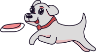

Por que ter um cachorro?
 Cães ensinam lições valiosas para as crianças As crianças que convivem com cachorros tendem a ser mais solidárias e menos egoístas. Isso ocorre porque o convívio com esses cães companheiros leva a criança a respeitar as necessidades de outros seres vivos.
Cachorros são garantia de boas risadas Você já deve ter visto muitos vídeos engraçados de cachorros. Então ao adotar um cachorro, esteja preparado para se divertir muito com ele. Já que rir é o melhor remédio, essa é mais uma das vantagens de ter um cachorro em casa.
Curiosidades sobre os cachorros
😴
Cães só dormem de barriga para cima quando se sentem seguros naquele ambiente.
🍕
Quando um cãozinho lambe o nariz, isso é uma tentativa de colocar o cheiro que sente em sua boca.
💖
Não importa qual cachorro você escolha, uma coisa é certa: ele vai ser o melhor amigo de quatro patas que você vai encontrar na vida! É muito amor para um bichinho só.
Conheça alguns dos nossos Aumigos
Sara
Shih Tzu
Até 1 anos de idade.
Sara é uma cachorrinha muito ativa e bagunceira, adora crianças e come bastante! A Sara supera até as tomadas, podemos dizer que ela é ligada no 330V.
Conhecer mais sobre o Aumigo...